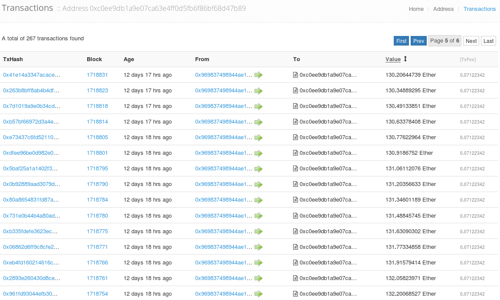
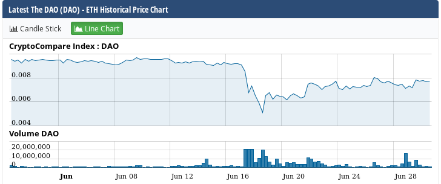

Ethereum, The DAO, the Hack
Lefteris Karapetsas
Created: 2016-07-04 Mon 11:26
Who Am I?
- Passionate about Systems Programming and AI
- Worked in Ethereum since 2014, c++ core and Solidity Language
- Tech Lead of slock.it and DAO contributor
Outline
- Section I: Introduce what the Ethereum protocol is and go through its basic components.
- Section II: Introduce what The DAO is.
- Section III: Explain the how the DAO hack happened and what its consequences are.
Section I - Ethereum
Ethereum
- Public blockain platform
- Programmable transactions
- Ethereum Virtual Machine
- Smart Contracts and Dapps.
Ethereum Blockchain
- Nodes create transactions and send them to the network
- Miners get the transactions, verify them and include them in their blocks.
- All nodes sync new blocks from the network and thus build the blockchain.
Accounts
- Generated from an ECDSA private/public key pair
- Has a certain balance
- Separated in:
- Externally Owned Accounts
- Contract accounts
Ether
Ether is the token that fuels the Ethereum Ecosystem.
- 1018 Wei
- 106 Szabo
- 103 Finney
Gas
- Every opcode in the EVM costs Gas
- Price in ETH is determined by the GasPrice
- You will end up needing more of it
PoW Mining
Transactions
Signed messages sent from externally owned accounts
- Contain fields with details of the transaction.
- They cost gas
- Contracts execute code when receiving them
Messages

- Exist only in the execution environment
- Same attributes as transactions
- May have a limited gas stipend
State transition

Ethereum VM
EVM Languages
- Solidity
- Serpent
- Mutan
Solidity
Ðapps
- Decentralized Applications
- Consisting of:
- Set of smart contracts
- Client side code that interacts with the contracts
- An Ethereum client
Ðapps
Prediction Markets
Ðapps
Decentralized Social Networks

Ðapps
Decentralized Autonomous Organizations
Section II - The DAO

The DAO - Overview
The DAO - Development
Over 860 commits by 18 contributors.
The DAO - Development
- Development started a year ago
- Developed by:
- slock.it members
- ethereum community members
- Audited by Dejavu security and many members of the Ethereum community
The DAO - Tokens

- Represent how much of the Ether in the DAO is owned by the holder
- Represent amount of voting power the holder has in proposals.
- Are fungible
- Are tradeable
The DAO - Curator
The DAO - Proposals
The way for DTH to influence the actions of the DAO.
The DAO - Proposals
- 14 days of debate period
- 2 ETH deposit, returned if quorum reached
- Require majority vote
- Require quorum ranging from 20% to 53.3% of DTH to be met
- Specify a transaction that the DAO should perform
The DAO - Splits
A way for DTH to get out
- Done via a special 7 day proposal
- Moves ether and create tokens in a new DAO
- Burns the old DAO tokens
The DAO - Creation
- Created on the 30th of April 2016
- 28 days of the fueling phase of the DAO
- Linear price increase after 14 days
- 12.1 Million Ether raised
The DAO - PostCreation
Many companies made very interesting proposals to the DAO
The DAO - PostCreation
My company slock.it was preparing the USN Proposal
The DAO - PostCreation
Next versions of the DAO were being prepared
The DAO - PostCreation
A path forward was set for the DAO with the DAO Improvements proposals
Section III - The Hack
Smart Contract Security
10th of June: Solidity anti-pattern becomes known
Smart Contract Security

Smart Contract Security
Deployed Dapps are affected
11th of June: Maker DAO is brought down
The DAO affected
12th of June
- Exploit discovered in
refund() - Exploit discovered in
newContract() - Exploit discovered in
executeProposal() - Exploit discovered in
withdrawRewardFor()
The DAO affected
Disaster strikes
17th of June 06:00 CET

Disaster strikes
The vulnerability was in a combination of splitDAO() and withdrawRewardFor()
Disaster strikes
The vulnerability was in a combination of splitDAO() and withdrawRewardFor()
Rise of The Dark DAO
- 3,641,694 ETH are stolen
- Frozen inside the Dark DAO until the 14th of July
- Attacker controls both accounts in that DAO
Immediate Aftermath
- DAO Market crash
- DAO price fell to almost 0.005 ETH

Immediate Aftermath
People joined random splits about to mature at the time.
Internet explodes
- All major news outlets report on the hack
- ETH price goes on a freefall
Whitehat Siphoning
- DAO was a hacker picnic
- The remaining money was not safe
Whitehat DAOs
- 2 Whitehat DAOS were created
- They control 7,630,621 ETH
Counterattack
- Introduced on 19th of June
- Empowers DTH to strike back
Counterattack
Soft Fork Proposal
- Is temporary
- Blacklists certain types transactions
- Adoption can only be decided by the miners
Soft Fork Rejection
- DDOS vulnerability was detected
- Imposing censorship on Ethereum will not work
- Release to undo the soft fork was immediate
for (uint32 i = 0; i < 1000000; i++) { sha3('some data'); // costly computation } dao.splitDAO(...); // render the transaction invalid
Hard Fork
- Protocol change after a specific block
- All ETH is moved back to the DAO account
- The DAO code is replaced by a simple refund contract
The Road Ahead
A lot of decisions ahead for the Ethereum Ecosystem
Lessons Learned
- Ecosystem not mature enough yet for totally autonomous contracts
- Kill switches should exist
- Smart contracts should use assertion-based programming
- New EVM languages with formal proofing may be needed
- Security and auditing of smart contracts should be top priority
End
Thank you for your attention!
Follow me Twitter/Github: @lefterisjp
Questions?